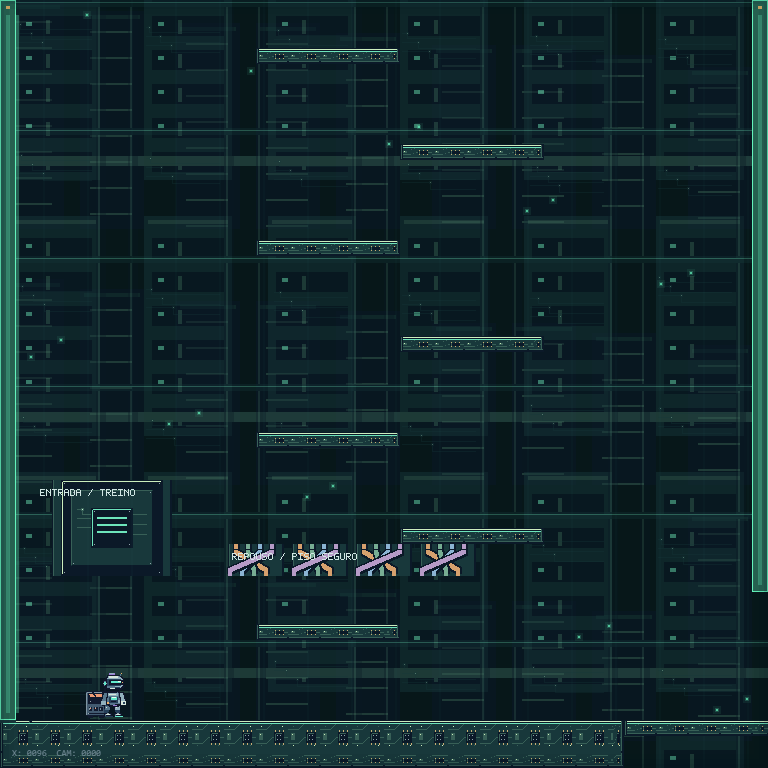
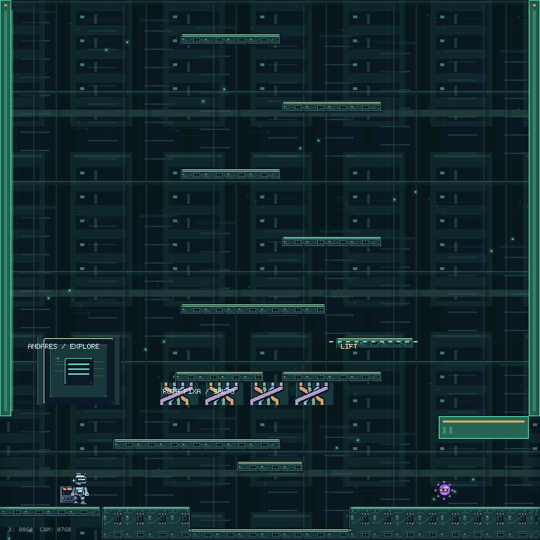
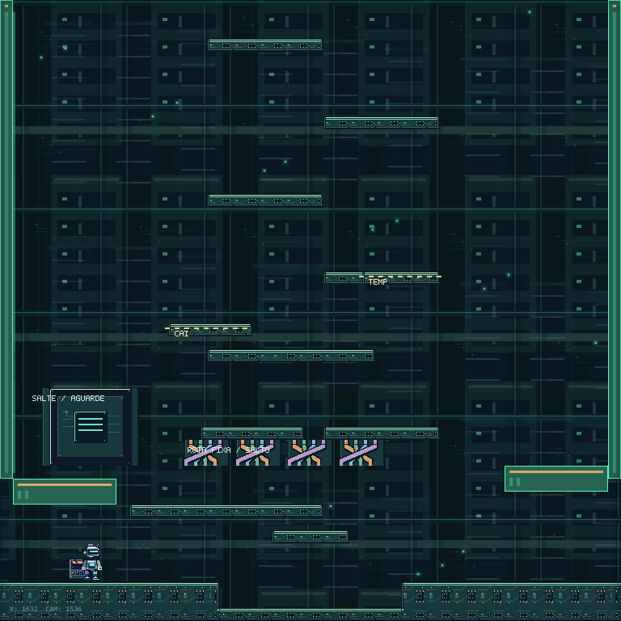
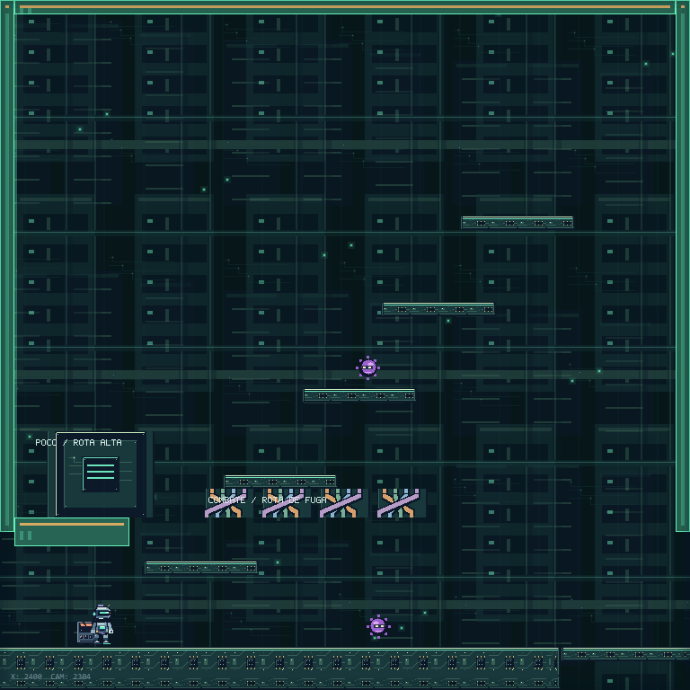
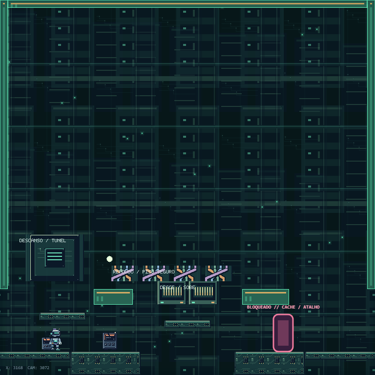
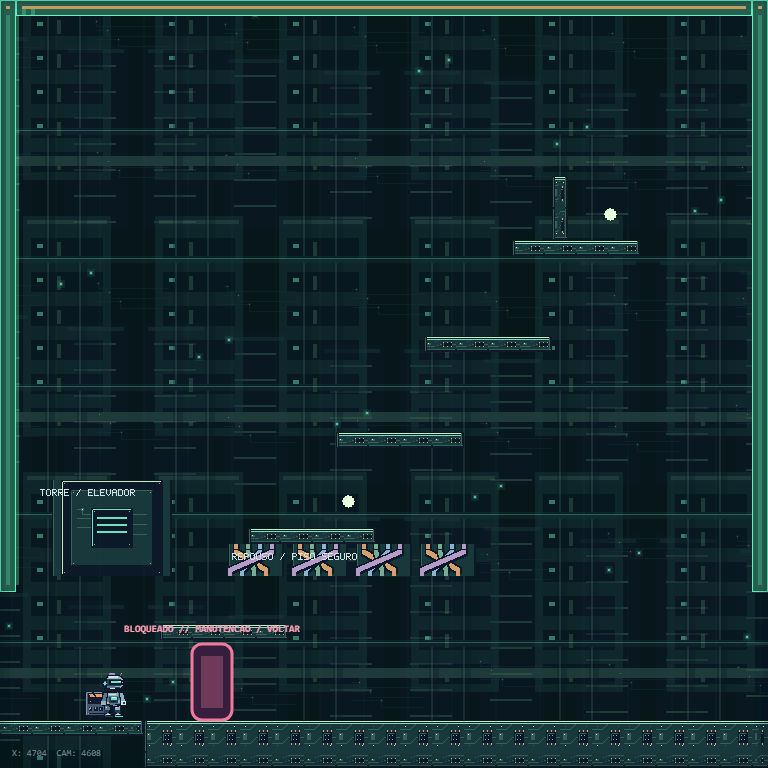
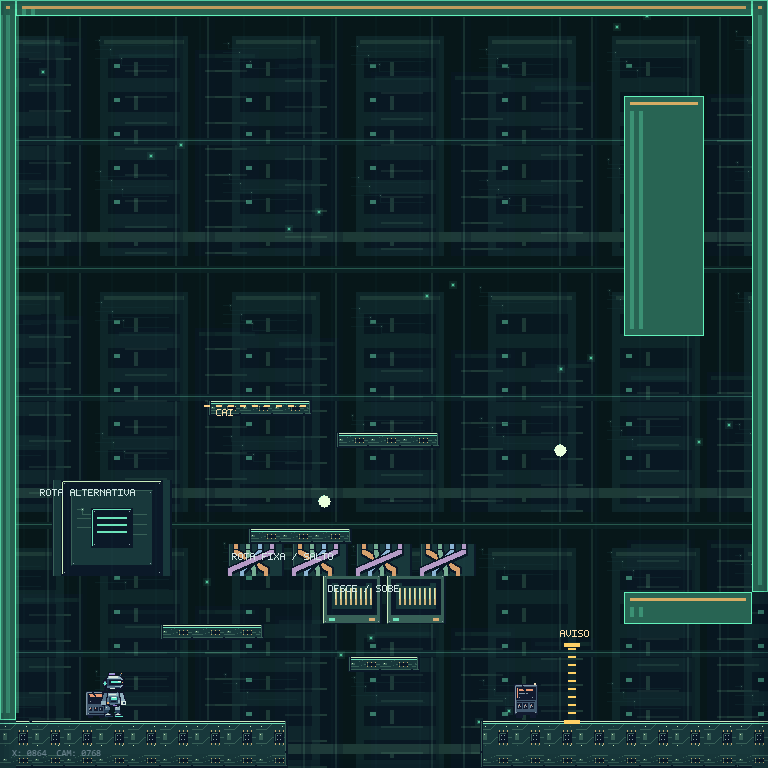
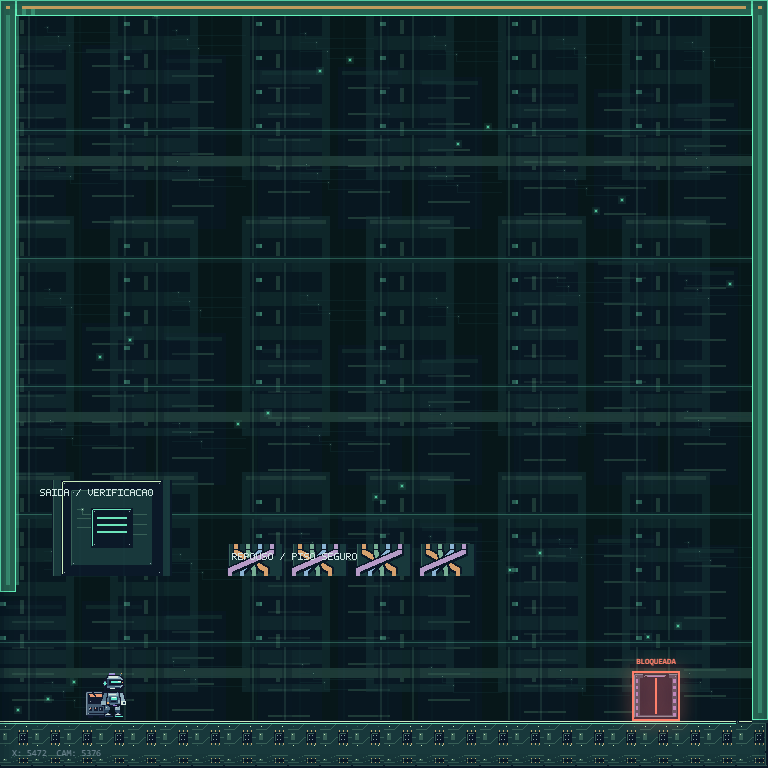

Capturas no motor real: início, exploração, parkour, combate, reparo, recompensa, segredo e final. O conteúdo respeita apoios, respawns e habilidades básicas.
Jogar a prévia · Regras, arquivos e testes







